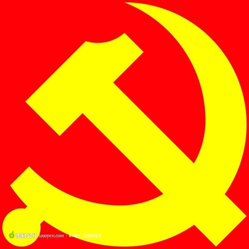

作者：wd
中国共产党第十九次全国代表大会主席团22日晚和23日上午在人民大会堂举行第三次和第四次会议，通过十九届中央委员会委员、候补委员和中央纪律检查委员会委员候选人名单（草案），提交各代表团酝酿。 习近平同志主持会议。 会议通过了经各代表团差额预选产生的十九届中央委员会委员、候补委员和中央纪律检查委员会委员候选人名单（草案），决定将名单提交各代表团酝酿。 据了解，从10月21日开始，各代表团对十八届中央政治局提出并经大会主席团通过的十九届中央委员会委员、候补委员和中央纪律检查委员会委员候选人预备人选名单进行了认真酝酿。代表们认为，这个名单是经过严密的组织程序、充分发扬党内民主产生的，集中了各地区、各部门、各条战线、各个行业党的执政骨干和优秀代表，整体素质优良、结构比较合理、分布比较均衡，群众基础比较好，是一个考虑比较周全的方案。 10月22日下午和23日上午，大会举行各代表团全体会议，先后对中央委员、中央纪委委员和候补中央委员进行了预选。按照大会选举办法的规定，预选采用差额选举办法，差额比例均多于8%。整个预选工作在大会主席团的领导下，在监票人的监督下，严格按照大会选举办法进行，预选结果合法、有效。 根据大会选举办法规定和日程安排，23日下午，大会举行各代表团分组会议，酝酿主席团第三次、第四次会议通过的中央委员、候补中央委员、中央纪委委员候选人名单。
报告分13个部分：一、过去五年的工作和历史性变革；二、新时代中国共产党的历史使命；三、新时代中国特色社会主义思想和基本方略；四、决胜全面建成小康社会，开启全面建设社会主义现代化国家新征程；五、贯彻新发展理念，建设现代化经济体系；六、健全人民当家作主制度体系，发展社会主义民主政治；七、坚定文化自信，推动社会主义文化繁荣兴盛；八、提高保障和改善民生水平，加强和创新社会治理；九、加快生态文明体制改革，建设美丽中国；十、坚持走中国特色强军之路，全面推进国防和军队现代化；十一、坚持“一国两制”，推进祖国统一；十二、坚持和平发展道路，推动构建人类命运共同体；十三、坚定不移全面从严治党，不断提高党的执政能力和领导水平。
1、中国共产党人的初心和使命，就是为中国人民谋幸福，为中华民族谋复兴。
2、中国特色社会主义进入了新时代。
3、中华民族迎来了从站起来、富起来到强起来的伟大飞跃。
4、我国社会主要矛盾已经转化为人民日益增长的美好生活需要和不平衡不充分的发展之间的矛盾。
5、中华民族伟大复兴，绝不是轻轻松松、敲锣打鼓就能实现的。
6、把人民对美好生活的向往作为奋斗目标，依靠人民创造历史伟业。
7、乘势而上开启全面建设社会主义现代化国家新征程，向第二个百年奋斗目标进军。
8、中华民族将以更加昂扬的姿态屹立于世界民族之林。
9、中国开放的大门不会关闭，只会越开越大。
10、有事好商量，众人的事情由众人商量，是人民民主的真谛。
11、把人民利益摆在至高无上的地位。
12、让全体人民住有所居。
13、打赢蓝天保卫战。
14、我们的军队是人民军队，我们的国防是全民国防。
15、我们有坚定的意志、充分的信心、足够的能力挫败任何形式的“台独”分裂图谋。
16、人民群众反对什么、痛恨什么，我们就要坚决防范和纠正什么。
17、不管腐败分子逃到哪里，都要缉拿归案、绳之以法。
18、党始终同人民想在一起、干在一起。
19、中国梦是我们这一代的，更是青年一代的。